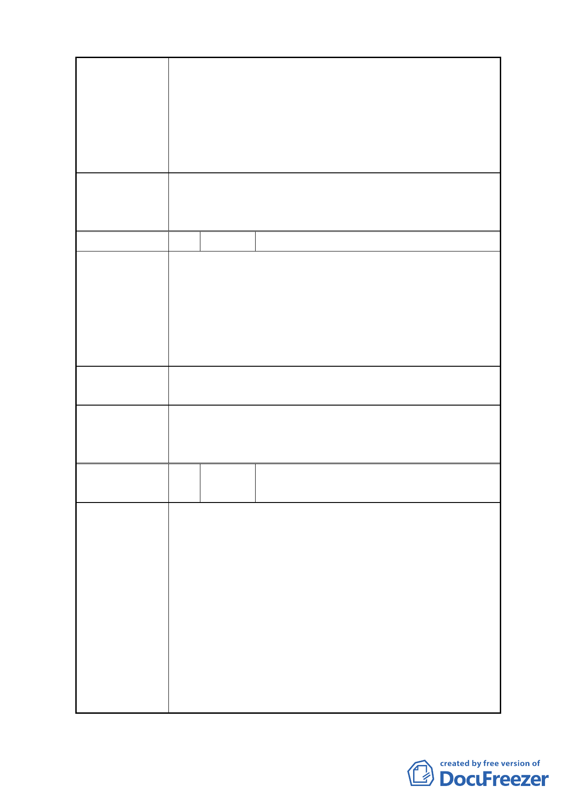

1.堅決反對變更住宅地目，台電應另覓非住宅區作為電
力設施用地。該地區可作為公園綠地。
建 議 辦 法 2.取消上述計畫案。
3.堅決反對變更地目，以維護居住品質。反對興建以及
堆置材料。
4.學生、住戶人口稠密，應放置安全電力設施。
本案細部計畫內容涉及變更後之使用分區名稱適用性，
委 員 會 決 議 及其用地取得方式之適法性與取得費用之經費支應程序
等疑義尚待釐清，全案退回市府依程序辦理。
編 號 5 陳情人 周挽中、林宣志
1.台電變更本案土地之項目，對附近居民和學校造成重
大疑慮，應嚴予規範。
2.上述 4 筆地號土地一旦變更為台電之電力設施用地，
陳 情 理 由 後續工程車頻繁進出、設施吊卸之吵雜聲等將長期對
該區鄰近之居住環境品質以及緊臨幾所學校學童之學
習環境、上下學安全等造成即不良影響。
1.建議台電，本案以興建辦公室為限。
建 議 辦 法 2.建議台電公司另覓其他用地，以免後續遭民怨或抗爭。
本案細部計畫內容涉及變更後之使用分區名稱適用性，
委 員 會 決 議 及其用地取得方式之適法性與取得費用之經費支應程序
等疑義尚待釐清，全案退回市府依程序辦理。
編 號 6 陳情人 羅友芹、蔡智暐、蔡智豪、吳惠玉、康文
錦、黃鳳珍
1.居民安全及健康堪慮；台電公司難保違法使用；經目
測評估台電無此需求。
2.本地原為國中網球場，可恢復該用途，周圍居民健康
及安全堪慮。
3.台電公司在本社區空地仍多，例如網球場即可自行規
陳 情 理 由 劃為電力設施，且營造中的材料足敷使用。
4.電力設施界定範圍不明，安全堪慮；電力材料運送車
輛多為拖板車，進出危及居民安全。且多年來台電在
本社區的活動與設施，未曾回饋社區居民。
5.附近三所學校學生千餘人每日進出，電力設施或材料
儲存危及安全；且周邊均為住宅區。
-5-